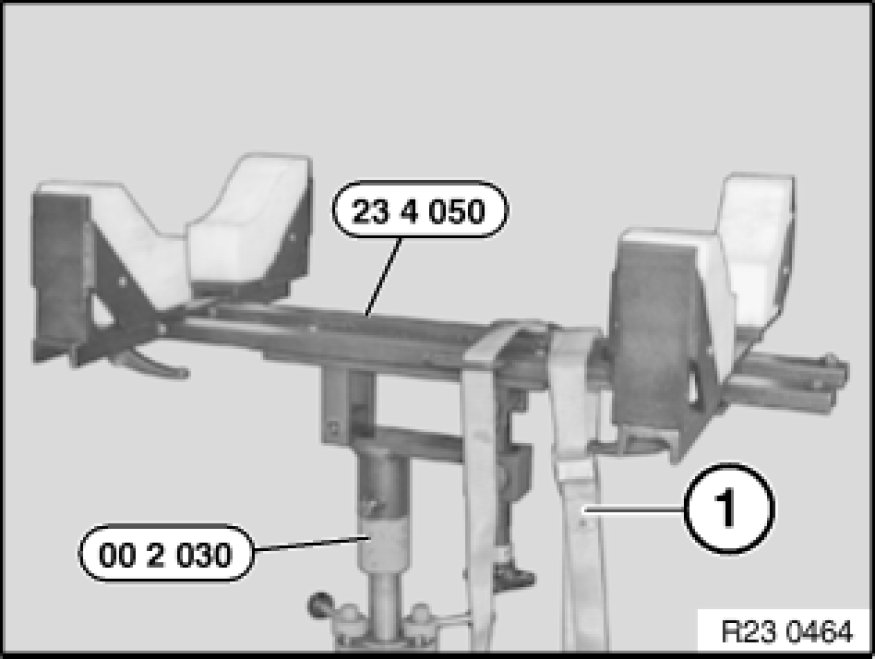

Universal BMW Transmission Take-Up
23 ... - Universal BMW transmission take-up

Special tools required:
- 00 2 030 00 2 030 Universal Hydro-Lifter Basic Unit
- 23 4 050 23 4 050 Universal Transmission Bracket

Note:
- The universal transmission bracket is introduced for the E60 AWD
- Suitable for manual and automatic transmissions
Important!
Front and rear supports (1) can be laterally adjusted by means of screws (2).
Carrier (3) of rear supports (1) can be longitudinally adjusted by means of screw.
Supports must be adapted in length and width to the transmission.

Supporting transmission:
Support transmission with special tools 23 4 050 23 4 050 Universal Transmission Bracket, 00 2 030 00 2 030 Universal Hydro-Lifter Basic Unit.
Important!
Transmission must be secured with tensioning strap (1).